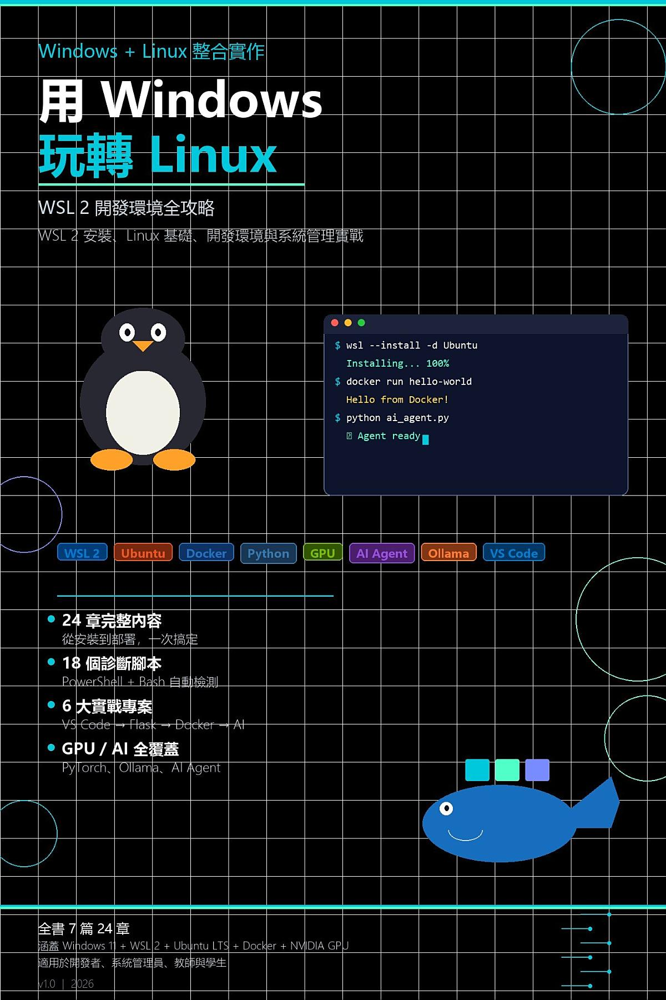

Google Play Books
用 Windows 玩轉 Linux
Windows + Linux 整合實作：WSL 2 開發環境全攻略：WSL 2 安裝、Linux 基礎、開發環境與系統管理實戰

付費購買提供試閱版
用 Windows 玩轉 Linux
Windows + Linux 整合實作：WSL 2 開發環境全攻略：WSL 2 安裝、Linux 基礎、開發環境與系統管理實戰
不必捨棄 Windows，也能完整學習 Linux。本書帶你安裝與排查 WSL 2，練習 Linux 指令、開發工具、Docker、檔案整合及系統管理。